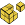

|
|
Main Window — Edit Toolbar |
Perform editing operations on the Workspace and its structures.
 |
Select Menu equivalent: Edit → Select Atoms → Pick to Select. Keyboard shortcut: ` Select atoms in the Workspace. Double-click to select all atoms. This button has a menu from which you can choose the type of structural unit you want to select. If you select a structural unit from the menu, the button's icon changes to reflect that structural unit (A for atoms, R for residues, etc.). Once you have chosen a structural unit, you can click on an atom in the Workspace and all the atoms in that structural unit are selected. For example, choose Residues and click on an atom. All the atoms in that residue are selected. You can expand the selection to include atoms or entire residues within a specified distance by choosing one of the distance options, and you can include or exclude the picked object in the final selection. You can choose an atom type to select all atoms of that type in the Workspace (e.g. protein backbone). You can choose Select to open the Atom Selection dialog box and specify atoms to select. |
 |
Undo/Redo Menu equivalent: Edit → Undo alias. Keyboard shortcut: Ctrl+Z (⌘Z) Undo or redo the last action. This button changes appearance, depending on the action. |
| Cut Menu equivalent: Edit → Copy/Paste/Cut → Cut. Keyboard shortcut: Ctrl+X (⌘X) Delete the selected atoms from the Workspace and place them on the clipboard. The atoms are added to the clipboard in Maestro format and in SMILES format. You can paste them into the Workspace at a later time, or paste them into another application. |
|
| Copy Menu equivalent: Edit → Copy/Paste/Cut → Copy. Keyboard shortcut: Ctrl+C (⌘C) Copy the Workspace selection onto the clipboard, and copy an image of the Workspace. The clipboard stores the atoms in the selection in Maestro format and SMILES format, and an an image of the Workspace. The SMILES string and the image can be pasted into another application; the atoms can be pasted back into the Workspace. The resolution of the image is the current screen resolution, so if you want a higher resolution, you should use the Save Image panel. |
|
| Paste Menu equivalent: Edit → Copy/Paste/Cut → Paste. Keyboard shortcut: Ctrl+V (⌘V) Paste a structure from the clipboard into the Workspace. The structure can be a SMILES string, a structure from ChemDraw or Isis Draw (Windows) or a set of atoms previously cut or copied from the Workspace. If the structure is a SMILES string, it is converted into a 2D structure. The 2D structure is added to the project as a new entry, with the SMILES string for the structure as the title. No attempt is made at 3D conversion. You should consider running LigPrep to convert the structure to 3D, or choose Edit → Paste Special → As 3D If you paste a set of atoms that were cut or copied from Maestro, they are placed at the coordinates at which they were cut or copied onto the clipboard. You can paste atoms from one Maestro session into another session. |
|
 |
Delete Menu equivalent: Edit → Delete → Pick to Delete. This button has a menu from which you can choose the object that you want to delete. The menu has four sections. The first section lists structural units. If you select one of these items, the delete button is indented to indicate that you are selecting to delete atoms or bonds from the structure. The second section lists atom categories that can be deleted, and zero-order bonds. The third section item opens the Atom Selection dialog box for defining which atoms to delete. The fourth section allows you to delete various kinds of markers associated with the structures in the Workspace: labels, measurements, H-bonds, contacts, ribbons, adjustments, and captions. For the second and fourth groups, the deletion takes place when you select the menu item. |
| Build Show or hide the Build toolbar and Fragments toolbar. To open the Build panel, click and hold, and choose Fragments, Atom Properties, or Residue Properties. |
|
| 2D Sketcher Menu equivalent: Tasks → Small Molecule Tasks → 2D Sketcher. Sketch to edit or create structures in 2D. Opens the 2D Sketcher panel. |
|
 |
Add H Menu equivalent: Edit → Add Hydrogens → Pick to Add Hydrogens. Add hydrogen atoms to a structure that lacks them, to complete the valence. This button has a menu from which you can choose the type of structure to which you want to add hydrogens. The menu has two sections. The first section is a list of structural units which allow you to add hydrogens to objects by selecting them in the Workspace. If you select one of these structural units, the button is indented to indicate that you are selecting to add hydrogens. The second section opens the Atom Selection dialog box for defining structures to which to add hydrogens. |
|  | Transform Menu equivalent: Edit → Advanced Edit Options → Transform → Pick to Transform. Keyboard shortcut: Ctrl+G (⌘G) Transform (rotate or translate) selected atoms in the Workspace. This button has a menu from which you can choose to display interaction markers and bond lengths while transforming, choose a structural unit to pick the atoms to transform, show markers while transforming, or open the Advanced Transformations panel for more control over the transformation. |
| Adjust Menu equivalent: Edit → Adjust Distances and Angles → Pick to Adjust. Adjust the structure manually. This button has a menu from which you can choose quick torsional adjustment, peptide linkage adjustments, adjustment of distances, angles, dihedrals or chirality, or side-chain rotamer adjustments. It has an option for displaying interaction markers while adjusting. Once you have made your choice, click on the atoms (or bonds) to be adjusted. To make the adjustment, use the mouse wheel or drag horizontally with the left mouse button. |
|